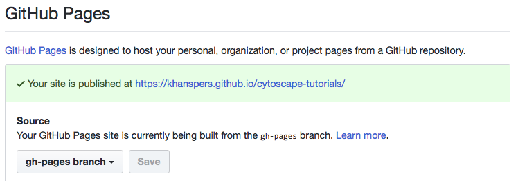

Training the Trainers
How to prepare and present Cytoscape workshops
2017
Training the Trainers
There are 6 modules to the program that you can complete at your own pace. We suggest one week per module so you can take your time and not feel rushed. Let us know if you have an questions or suggestions.
Navigating Training Materials
Let's start by getting familiar with the newest content already prepared and ready for presentation...
- Introduction to Cytoscape Tutorials Using Reveal
- - learn how present (and prepare) new training materials
- Presentations, Protocols and Modules
- - browse through the current materials and practice reveal's unique navigation system
- Tutorial and Automation code repositories
- - browse the public repos for tutorials and automation scripts
Navigating Training Materials
- Did you notice how the navigation goes left-to-right and top-to-bottom?
- How do you get an overview of the entire presentation?
- Did you find how to display speaker notes and the timer?
- Can you tell which modules were used in a given presentation or protocol?
- Can you find where tutorial R scripts are kept?
Setting Up Tools
Let's make sure we have everything installed and up-to-date. Some of these tools might be pre-release versions, so that you are prepared for what will be coming. Install and test the following...
- Cytoscape 3.6.0 (pre-release) -- requires Java 8; test by launching
- CyREST v3.5.2+ (pre-release) -- test via Cytoscape: Help>Automation>CyREST API
- R 3.3.3+ and RStudio 1.0.143+ -- test by launching RStudio
- Node.js 6.11.4 (LTS) -- test by typing "node --version"
Setting Up Tools
Launch Cytoscape and RStudio and then confirm the following:
- What is the output of this link? http://localhost:1234/v1/version
- - you should see "v1" and "3.6.0-SNAPSHOT"
- Can you successfully run these two scripts in RStudio?
Designing a Module
Setup your own fork of the cytoscape-tutorials material and make it publishable via GitHub Pages (so we can review your code!).
- Fork the Cytoscape Tutorials repo.
- Publish your fork via GitHub Pages. GitHub settings should show a green checkmark message, if not switch the Source branch to master and then back to gh-pages. 
- Follow the link to view your GitHub Pages.
Designing a Module
Explore the structure of the repo:
- Open presentations/template.html and review the code, in particular how modules are pulled in.
- Navigate to one of the module templates. Each module contains both index.html and module.html. The latter contains the code representing slides and content, the former is simply a wrapper to view the module on its own.
- Review any module.html to learn how slides are created.
Designing a Module
Create an outline of a new module:
- Review existing modules under presentations/modules
- Review documentation for how to create a new module.
- Create a new module in your fork, consisting of just a single slide with a bullet list outline.
Completing a Module
This week, you will complete the module you designed in week 4.
- Create slides representing the items in your outline
- Include at least 3 of these 5 content types:
- Image (<img>)
- Ribbons (<ribbon>)
- CyBrowser button (class=“cybrowser”)
- Two-column layout (class=“column”)
- Animated slide content (class=“fragment”)
Completing a Module
Resources to help you get started are available here:
Packaging a Module
This week, you will package the module you completed in week 5, making it ready for presentation and sharing.
- Copy and rename the template.html in the presentations dir
- Add a title slide; add an introduction slide (introducing you)
- Now insert your module. hint: just a single line of code
- Then add a final slide with a
thank you or however you like to end presentations
Packaging a Module
Now you can use and share the github.io url pointing to your presentation html (not the module). Think of this as a specific instance of you module, with contextual slides for a particular workshop.
You now have all the tools to build multi-module presentations, reuse modules by others, and share presentations by simple urls.